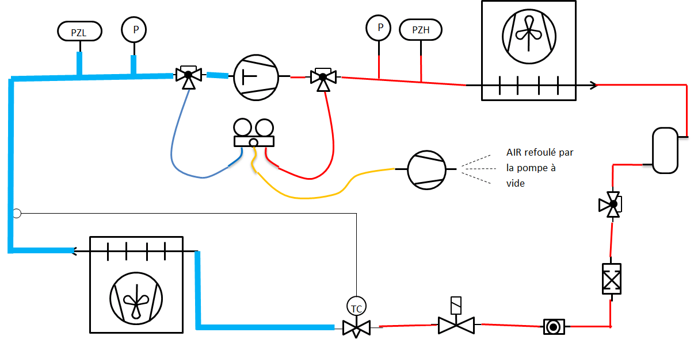

LPP
JACQUES RAYNAUD

| NiveauCAP IFCA 2A |
Thème / DomaineMise en service finale AUTONOME — répétition générale du CCF EP3 |
Module A6-b — atelier de S15Mise en service autonome et validation |
SéquenceS15 · sem. 21, 05-09/05/2027 |
| Nom________________ |
Prénom________________ |
Date________________ |
Positionnement
01234
|
Mise en situation professionnelle
Le groupe frigorifique du chantier, remis en état lors des séquences précédentes (diagnostic, brasure, câblage,
étanchéité, tirage au vide, charge), doit repartir en configuration « livraison ». Ordre d'intervention
n° S15-A6-03 : votre professeur a fait récupérer le fluide de la machine pour vous permettre de
rejouer l'intervention complète de mise en service, seul(e), dans des conditions proches du CCF EP3
(l'épreuve qui validera votre diplôme). Vous devez tirer au vide le circuit, le charger, relever ses paramètres de
fonctionnement, calculer, régler, puis déclarer — preuves à l'appui — si la machine est validée.
Aucune aide méthodique ne vous sera donnée pendant l'intervention : ce document ne contient pas de
pas-à-pas. Seul un point d'arrêt sécurité subsiste avant toute remise sous tension.
Objectifs — je serai capable de…
- organiser seul(e) mon intervention à partir d'un ordre d'intervention court, sans pas-à-pas ;
- tirer au vide le circuit frigorifique et vérifier que la dépression reste stable après isolement ;
- charger le circuit en fluide frigorigène, en pesant les quantités, sans aucune perte à l'atmosphère ;
- relever les pressions HP et BP et les températures nécessaires au calcul de la surchauffe et du sous-refroidissement ;
- calculer ces deux écarts, les comparer aux seuils autorisés, et régler les organes de consigne selon la notice, validés par le professeur ;
- déclarer, preuves écrites à l'appui, si la machine est validée ou non validée.
Prérequis — je sais déjà…
- poser un manifold sans perte de fluide et lire un manomètre HP (rouge) / BP (bleu) ;
- réaliser une épreuve d'étanchéité à l'azote et un tirage au vide, lire un vacuomètre (module S12) ;
- les définitions et les deux formules de la surchauffe et du sous-refroidissement, et leur comparaison aux seuils autorisés (module A5-b) ;
- consigner une installation électrique selon la NFC 18-510 et réaliser une vérification d'absence de tension (VAT).
Ce module ne revient sur aucun de ces prérequis :
si l'un d'eux vous manque, dites-le au professeur avant de commencer — il ne sera plus rappelé une fois
l'intervention lancée.
Matériel
- Groupe frigorifique du chantier, remis en état, fluide récupéré avant la séance (× 1 par élève ou binôme)
- Manifold 4 voies avec manomètres HP (rouge) et BP (bleu) (× 1)
- Pompe à vide + vacuomètre (indicateur de vide) (× 1)
- Bouteille de charge du fluide de l'installation, avec balance de charge (consommable) (× 1)
- Bouteille de récupération dédiée, étiquetée (si besoin) (× 1)
- Thermomètre de contact ou pince thermocouple (× 1)
- Table de correspondance pression-température fournie par le professeur, selon le fluide de l'installation (annexe de ce document, × 1)
- Notice constructeur de l'installation (× 1)
- Tournevis de réglage adapté au pressostat / détendeur (× 1)
- EPI : gants de manipulation fluide, lunettes de sécurité, chaussures de sécurité (× 1 jeu par élève)
- Cadenas de consignation individuel + matériel de VAT (× 1 par élève)
- Ce document (check-list « machine validée ») + carnet de bord (module F3) + bon de commande
Consignes de sécurité
| Risque | Parade |
|---|
| Rejet de fluide à l'atmosphère | Interdiction formelle. Tout retrait de fluide passe par la bouteille de récupération dédiée et étiquetée (réglementation F-Gaz). |
| Bouteille chauffée pour accélérer un transfert | Jamais de flamme, jamais de source de chaleur directe sur une bouteille de fluide frigorigène. |
| Pressostat shunté (chaîne de sécurité inactive) | Interdiction formelle de shunter un pressostat ou tout organe de sécurité, même pour « aller plus vite ». |
| Électrisation lors du réglage ou de la remise sous tension | Consignation NFC 18-510 et VAT obligatoires : c'est le point d'arrêt sécurité de cette séance, validé par le professeur avant toute remise sous tension. |
| Pompe à vide mise en route sans vérification | Vérifier systématiquement le niveau d'huile (hublot de regard) avant chaque mise en route. |
| Projection de fluide au raccordement du manifold | Lunettes de sécurité et gants portés en continu, ouverture lente et progressive des vannes. |
🚨 En cas d'incident — couper l'alimentation (arrêt d'urgence), alerter
immédiatement le professeur, ne jamais tenter seul(e) un geste non maîtrisé. Trousse de secours et arrêt d'urgence
localisés en salle, poste indiqué par le professeur en début de séance.
❄ inerWeb Édu — par F. Henninot · LPP Jacques Raynaud — Campus EQUATIO
créé le 09/07/2026 · © F. Henninot 2026 — diffusion pédagogique autorisée, mention de l'origine requise
LPP
JACQUES RAYNAUD
S15 · module A6-b · CAP IFCA 2A — document élève
Exercice au fil de l'eau (pendant le passage en tenue)
Sur le schéma fluidique réduit ci-dessous (manifold + pompe à vide), entourez le point
de raccordement de la pompe à vide, puis rappelez avec vos mots les deux formules apprises en module A5-b :

Schéma réduit pour repérage — la version complète est en annexe, à garder sous les yeux pendant l'intervention.
Surchauffe (SC) =
Sous-refroidissement (SR) =
La notion du jour — une déclaration est une preuve, pas une impression
Observez les deux comptes rendus de mise en service que le professeur présente.
Observation — Le premier compte rendu dit simplement « la machine
fonctionne, tout est bon ». Le second donne des valeurs relevées, des calculs, une comparaison aux seuils et une
décision. Sans encore juger lequel est le meilleur technicien, qu'est-ce qui différencie les deux documents ?
Question — Si vous étiez le client qui reçoit sa machine, lequel des deux
comptes rendus vous rassurerait, et pourquoi ?
Une machine n'est pas « validée » parce qu'un technicien le dit : elle est validée
parce que des relevés chiffrés, comparés à des seuils connus, le prouvent. C'est exactement ce
que le jury du CCF EP3 attendra de vous : pas une impression, une preuve. C'est le sens du document que vous
allez remplir aujourd'hui : une check-list « machine validée ».
Mon plan d'intervention — avant de commencer
Ce document ne vous donne aucun ordre imposé pour les opérations à suivre.
Avant de toucher au matériel, écrivez vous-même, dans l'ordre que vous jugez pertinent, les grandes étapes
de votre intervention (vous pouvez vous aider des titres de la check-list des feuilles suivantes, sans recopier
leur ordre si vous pensez qu'un autre ordre est plus logique). Le professeur récupère cette page pour référence :
il ne la corrige pas avant l'intervention.
❄ inerWeb Édu — par F. Henninot · LPP Jacques Raynaud — Campus EQUATIO
créé le 09/07/2026 · © F. Henninot 2026 — diffusion pédagogique autorisée, mention de l'origine requise
LPP
JACQUES RAYNAUD
S15 · module A6-b · CAP IFCA 2A — document élève
Check-list « machine validée » — partie 1 : sécurité, vide, charge
Cette check-list est votre fil conducteur et votre preuve, pas un mode
d'emploi : vous la renseignez au fur et à mesure de votre intervention, dans l'ordre qui vous convient. Chaque
case doit être remplie par un relevé réel, jamais par une estimation.
A. Sécurité générale
EPI portés en continu (lunettes, gants, chaussures de sécurité) ☐
Installation consignée avant toute intervention électrique (NFC 18-510) ☐
Point d'arrêt sécurité — VAT réalisée et vérifiée par le professeur avant toute remise sous tension : Visa professeur ________________ Heure ________________
Niveau d'huile de la pompe à vide vérifié avant mise en route ☐
B. Tirage au vide
Raccordez la pompe à vide sur la voie de service du manifold et tirez
au vide l'ensemble du circuit. Isolez, puis vérifiez la stabilité de la dépression.
| Mesure | Valeur | Unité |
|---|
| Lecture du vacuomètre juste après isolement | | mbar |
| Lecture du vacuomètre après attente | | mbar |
| Durée d'attente observée | | min |
| Dépression stable ou remontée ? | Stable ☐ Remontée ☐ | — |
Si la dépression remonte : que faites-vous avant de poursuivre vers la charge ?
C. Charge en fluide frigorigène
La quantité de fluide à introduire est selon la plaque
signalétique de l'installation, à faire valider par le professeur — aucune valeur n'est donnée dans ce
document.
| Mesure | Valeur | Unité |
|---|
| Méthode de charge choisie (liquide / vapeur) | | — |
| Masse de la bouteille avant charge | | kg |
| Masse de la bouteille après charge | | kg |
| Masse de fluide introduite | | kg |
| Quantité visée (plaque signalétique, validée par le professeur) | | kg |
❄ inerWeb Édu — par F. Henninot · LPP Jacques Raynaud — Campus EQUATIO
créé le 09/07/2026 · © F. Henninot 2026 — diffusion pédagogique autorisée, mention de l'origine requise
LPP
JACQUES RAYNAUD
S15 · module A6-b · CAP IFCA 2A — document élève
Check-list « machine validée » — partie 2 : relevés, calculs, réglages
D. Relevés de fonctionnement
Installation en marche, relevez au manifold et sur la tuyauterie.
N'oubliez jamais les unités.
| Grandeur | Valeur mesurée | Unité |
|---|
| Pression BP (manomètre bleu) | | bar |
| Pression HP (manomètre rouge) | | bar |
| T° de saturation BP (table pression-température, annexe) | | °C |
| T° de saturation HP (table pression-température, annexe) | | °C |
| T° d'aspiration mesurée | | °C |
| T° liquide mesurée (sortie condenseur) | | °C |
| Intensité absorbée par le compresseur | | A |
E. Calculs — surchauffe et sous-refroidissement
Reportez-vous à l'annexe « rappel méthode SC/SR » si besoin.
| Grandeur | Calcul et résultat | Seuil autorisé |
|---|
| Surchauffe SC = T° aspiration − T° saturation BP | | 5 à 10 K |
| Sous-refroidissement SR = T° saturation HP − T° liquide | | 4 à 8 K |
Mon diagnostic (charge correcte / insuffisante / excessive / incondensables suspectés) :
F. Réglages et sécurités
Selon la notice constructeur, à faire valider par le
professeur. Aucune valeur n'est donnée dans ce document : chaque installation a sa propre notice.
| Organe réglé / vérifié | Valeur de consigne (selon notice) | Validé par le professeur |
|---|
| Pressostat BP | | ☐ |
| Pressostat HP | | ☐ |
| Détendeur (si réglable) | | ☐ |
| Bouchons et raccords remis en place | — | ☐ |
G. Ma déclaration finale
Au vu de l'ensemble de mes relevés et calculs (parties A à F), je
déclare la machine :
MACHINE VALIDÉE ☐ MACHINE NON VALIDÉE ☐
Justification (en m'appuyant sur mes chiffres, pas sur une impression) :
Si « non validée » : quelle action corrective proposez-vous ?
Question de compréhension — Pourquoi une déclaration « machine validée » sans
aucun chiffre à l'appui ne serait-elle pas recevable, même si la machine fonctionne réellement bien ?
❄ inerWeb Édu — par F. Henninot · LPP Jacques Raynaud — Campus EQUATIO
créé le 09/07/2026 · © F. Henninot 2026 — diffusion pédagogique autorisée, mention de l'origine requise
LPP
JACQUES RAYNAUD
S15 · module A6-b · CAP IFCA 2A — document élève
Grille d'évaluation
Échelle FrigorX : 0 Non évalué · 1 Non acquis · 2 En cours
d'acquisition · 3 Acquis · 4 Parfaitement maîtrisé. Observation continue pendant toute l'intervention autonome
(pas de poste séparé) : votre professeur vous a observé(e) du début à la fin.
| Compétence / savoir-être | Ancrage | 0
Non évalué | 1
Non acquis | 2
En cours d'acquisition | 3
Acquis | 4
Parfaitement maîtrisé |
|---|
| C4.1 Tirer au vide le circuit frigorifique | sur T13 · S5.1 | Compétence non observée ce jour. | Vide non atteint ou stabilité après isolement non vérifiée, malgré l'enjeu. | Vide atteint mais méthode incomplète, ou stabilité contrôlée seulement après rappel du professeur. | Vide atteint et stabilité vérifiée seul(e) après isolement, méthode correcte, en autonomie complète. | Comme « Acquis », et diagnostique seul(e) une remontée anormale de pression (fuite ou humidité) sans solliciter le professeur. |
| C4.5 Mesurer, comparer des grandeurs | sur T13 · S5.6 | Compétence non observée ce jour. | Relevés HP/BP/T manquants ou erronés, calcul SC/SR faux et non repéré. | Relevés et calculs corrects obtenus seulement après sollicitation du professeur hors point d'arrêt. | Relevés complets, unités correctes, SC et SR calculés et comparés seul(e) aux seuils autorisés. | Comme « Acquis », et repère de lui/elle-même une valeur aberrante et la re-mesure sans y être invité(e). |
| C4.6 Paramétrer/régler les valeurs de consigne | sur T14 · S5.6 | Compétence non observée ce jour. | Réglage non conforme à la notice ou engagé sans validation professeur au point d'arrêt. | Réglage cohérent avec le diagnostic mais aide nécessaire sur la lecture de la notice ou le geste. | Pressostat(s) et/ou détendeur réglés selon la notice, validés par le professeur, en autonomie. | Comme « Acquis », et explique à un pair le lien entre son diagnostic et le réglage choisi. |
| Savoir-être — autonomie, honnêteté, sécurité | observation continue | Non observé ce jour. | Sollicite le professeur en continu hors point d'arrêt sécurité, ou valeurs arrangées, ou sécurité non respectée. | Sécurité et rigueur respectées avec rappel ; sollicitations au-delà du point d'arrêt prévu. | Autonomie complète hors point d'arrêt sécurité, déclaration honnête même en cas d'écart, calme en répétition d'examen. | Comme « Acquis », et aide spontanément un pair sans compromettre son propre poste ni la rigueur de ses relevés. |
Mon auto-positionnement (avant correction professeur) :
C4.1 : 01234
C4.5 : 01234
C4.6 : 01234
Documents à remettre
- Ce document complété (plan d'intervention, check-list A à G, déclaration finale, auto-positionnement)
- Carnet de bord (module F3) et bon de commande de la journée
D'après : Série 2 Activité 10 —
Mise en service d'un climatiseur ; TP Mise en service du Groupe Frigorifique Sanden ; cahier mise en service
(mise sous azote, tirage au vide, charge, surchauffe, sous-refroidissement) ; CAP IFCA EP3 24-25 version finale
(calibrage du niveau d'autonomie attendu).
❄ inerWeb Édu — par F. Henninot · LPP Jacques Raynaud — Campus EQUATIO
créé le 09/07/2026 · © F. Henninot 2026 — diffusion pédagogique autorisée, mention de l'origine requise
Annexe — document de travail
Schéma fluidique complet — manifold et pompe à vide
⚠ À imprimer de préférence en A3 PAYSAGE : c'est
le document à garder sous les yeux pendant toute l'intervention. La version réduite en feuille 2 sert au repérage,
celle-ci sert au travail.
❄ inerWeb Édu — par F. Henninot · LPP Jacques Raynaud — Campus EQUATIOcréé le 09/07/2026 · © F. Henninot 2026 — diffusion pédagogique autorisée, mention de l'origine requise
LPP
JACQUES RAYNAUD
S15 · module A6-b · CAP IFCA 2A — annexe
Rappel — méthode de calcul de la surchauffe et du sous-refroidissement
La surchauffe (SC) se mesure côté aspiration : c'est l'écart entre la
température réellement mesurée sur la tuyauterie d'aspiration et la température de saturation correspondant à la
pression BP lue au manomètre (obtenue via la table ci-dessous). SC = T° aspiration − T° saturation BP.
Seuil autorisé : 5 à 10 K.
Le sous-refroidissement (SR) se mesure côté liquide : c'est l'écart entre la
température de saturation correspondant à la pression HP lue au manomètre, et la température réellement mesurée
en sortie de condenseur, sur la ligne liquide. SR = T° saturation HP − T° liquide. Seuil autorisé :
4 à 8 K.
Rappel de méthode uniquement — les valeurs
chiffrées de votre intervention dépendent entièrement du fluide réel de votre poste et des conditions du jour :
aucune valeur n'est donnée ici.
Table de correspondance pression → température de saturation
⚠ Grille vierge à compléter par le professeur,
selon le fluide frigorigène réellement présent sur le poste (table constructeur ou réglette pression-température
officielle). Aucune valeur n'est préremplie ici : la correspondance pression-température dépend
entièrement du fluide.
| Fluide de l'installation (à préciser par le professeur) | |
|---|
| Pression relative (bar) | T° de saturation côté BP (°C) | T° de saturation côté HP (°C) |
|---|
| 0 | | |
| 1 | | |
| 2 | | |
| 3 | | |
| 4 | | |
| 5 | | |
| 6 | | |
| 8 | | |
| 10 | | |
| 12 | | |
| 15 | | |
| 18 | | |
| 20 | | |
| 25 | | |
Utilisation : repérer la pression lue au manomètre dans la colonne de
gauche, lire en face la température de saturation correspondante, pour le fluide indiqué en en-tête.
❄ inerWeb Édu — par F. Henninot · LPP Jacques Raynaud — Campus EQUATIOcréé le 09/07/2026 · © F. Henninot 2026 — diffusion pédagogique autorisée, mention de l'origine requise